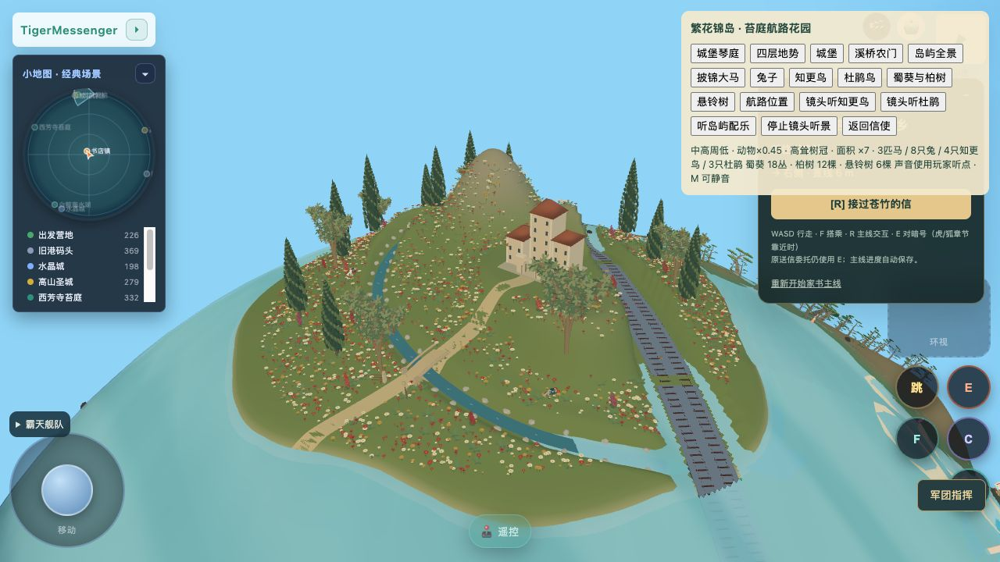
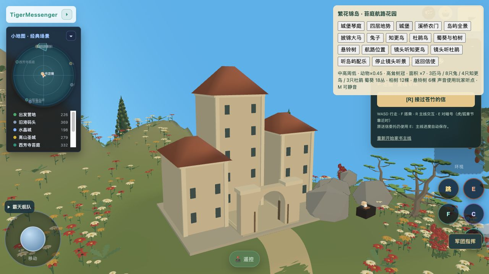
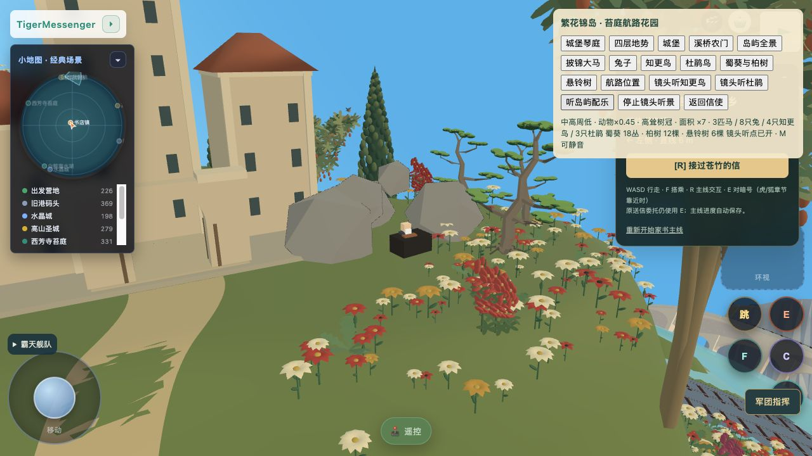

查看最新：盘山入堡与四层高低
莫里斯岛 · 高树、城堡与织锦花园
已接正式场景：高耸柏树与悬铃树、缩小的动物、Oskar方法顾问的主堡与错层翼楼、溪岸花石及城堡琴庭。
进入正式游戏 → 🤖 →「繁花锦岛 · 披锦大马」；「听岛屿配乐」可在摄影检查中试听，返回信使恢复玩家听点。
原创配乐《织锦花园》
62.47秒原创合成器乐：钢琴、弦乐、笛声；接近舒缓神秘花园的气质，未使用神秘园商业录音。游戏中区域渐入渐出、每次到访一次，M静音，老人互动/战斗/电车音乐优先。正式游戏实景


后置主塔、错层翼楼、真实空拱门
保留原老人、乐器、岩石与古松目标图 V3
这是目标图，不是游戏截图。当前3D细节密度、织物质感仍有差距；完整步行和乘车航行未验收。实施与验证记录 · 当前状态和缺项 · 目标图提示词（内置imagegen） · 生产配乐控制器检查